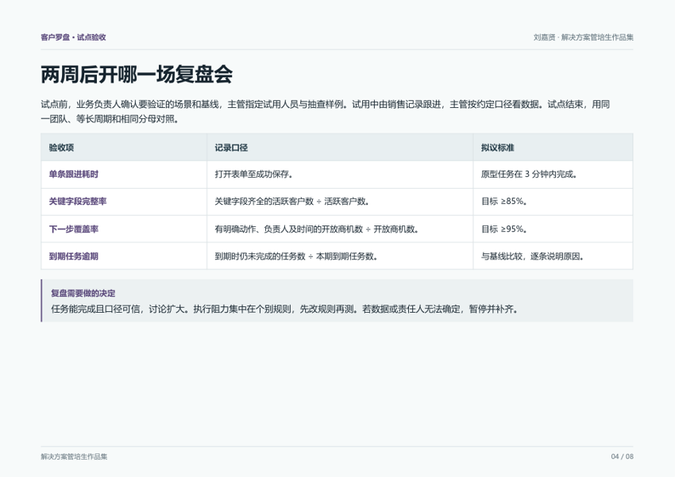
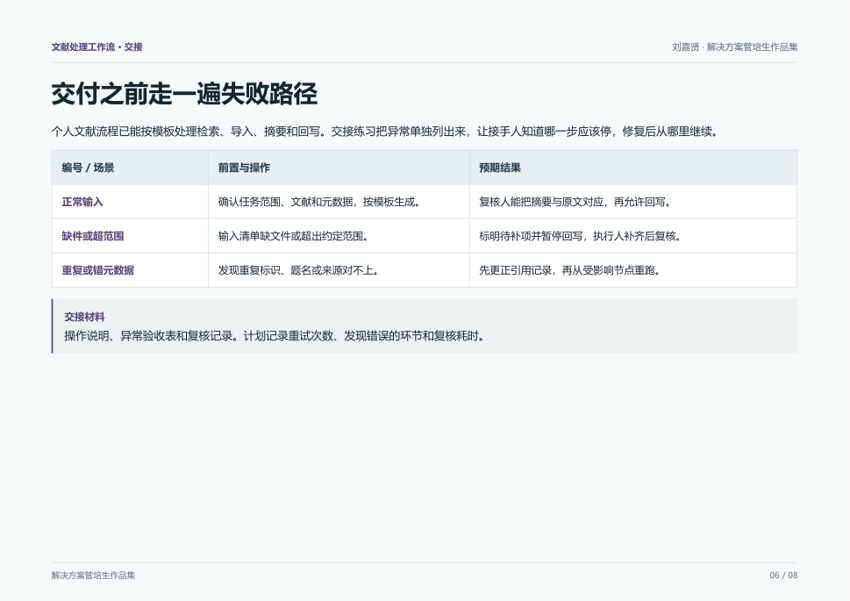
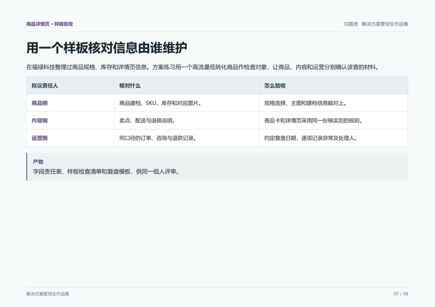

试点与验收个人概念方案
客户罗盘试点方案
明确谁使用、谁验收、谁接收反馈，再用两周试点检验过程指标。
查看案例解决方案管培生作品集
从 ToB 客户沟通和交付条件出发，我把需求写成决策角色、演示脚本和拟议验收口径。


试点与验收个人概念方案
明确谁使用、谁验收、谁接收反馈，再用两周试点检验过程指标。
查看案例
交接与异常用例个人流程 · 交接方案
给异常分配处理人，并约定从哪个节点重跑、由谁确认。
查看案例
职责与样板核查福禄科技实习复盘
让商品、内容和运营按字段分工，通过样板商品验收一致性。
查看案例一线销售试做跟进，主管抽查停滞和下一步，产品与运营接收问题清单。
用同一组样例演示记录、提醒和需求回流，明确现场要确认的输入与输出。
核对录入时间、字段完整率和下一步覆盖率，复盘决定继续、调整或暂停。
销售 · 需求诊断与交付协同
了解客户场景、采购角色与时间窗口，围绕功能、权限和交付条件准备说明。由这些问题推导出客户罗盘的拟议角色分工、演示脚本和验收表。
看对应案例 ↗客户服务实习 · 异常协调
按问题场景与责任人对接门店、仓库、物流和售后，并跟进处理结果。
东北大学 · 工商管理硕士在读
湖北工业大学 · 电子商务本科
迭代记录
我把第一版的功能清单改成角色分工、演示脚本与验收表。拟先用样例演示确认口径，再采基线，试点结束后由业务负责人决定继续、调整或暂停。
一线销售试做跟进，主管抽查停滞和下一步，产品与运营接收问题清单。
用同一组样例演示记录、提醒和需求回流，明确现场要确认的输入与输出。
核对录入时间、字段完整率和下一步覆盖率，复盘决定继续、调整或暂停。
个人概念方案
在艾利佳销售岗位，我接触了客户场景、采购角色、报价和交付条件。客户罗盘是我基于这些场景独立整理的试点方案。
个人流程 · 交接方案
福禄科技实习复盘
在福禄科技电商运营实习中，我整理过商品规格、库存和详情页信息。这里展示基于该场景拟定的角色分工和样板商品验收流程。